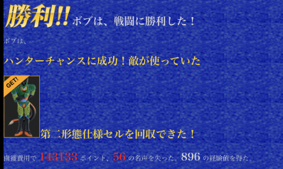
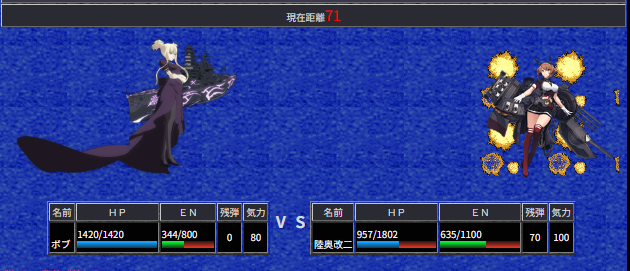

◆HC（ハンターチャンス）とは？
勝利すると相手の機体をゲット出来る素敵なバトル！
名声150,000以上必要なあの機体や、ポイント10億以上必要なあの機体が手に入るかも！？

▲鹵獲した強力な敵機体の例
◆準備する機体は？
いつもの水神様たち（ザク・マリンタイプやガンダイバー）が最有力です。
地形を選べるため、海洋にして特殊武器+アナライザーで御威光を賜りましょう。
ただ、彼らの特殊武器の射程は近・中距離。遠距離特化で育てているとなかなかに厳しい…TT
唯一の遠距離射程水中特攻武器の「35.6cm連装砲」は、何と重量が192もあり、水神様たちには担げません。
そこで、海洋に強い上に装備可能重量の大きい艦これ機体の出番です。
幸い、敵の強さは自機の強さに関係無さそうな為
HPの大きい艦これ機体で遠くからチクチクと削って貰う戦法も有効です。

▲重量級機体を活かした遠距離戦術
◆注意点
⚠️ ごほうびボタンを押すと消えます！ 脳死でクリックしてしまい何度逃した事か…
⚠️ 鹵獲に成功すると、それなりのポイントと名声を消費します！ 数十万ポイント＋名声数十はざらです。
⚠️ 鹵獲した機体は、仕様により暫くは売りに出せない事があります。
⚠️ 敵の強さは自分の「気力」依存です。気力150だと敵HPは8000オーバーになります。
⚠️ 基本的には後述の方法でタイミングを測り、気力50でのチャレンジをお勧めします。
◆HCの発生タイミング（検証中：98％解析完了）
HCが現れるタイミングは決まっており、狙って気力を調整することが出来ます。
気力の調整方法は、HCが現れる直前に模擬戦や掃討盤などで負けるだけです。
いつHCが現れるのかと言うと、これが多少複雑ですので、順に説明します
☆パターンA：その日、二回目以降のHCが発生するタイミング
日付によって前回のHCから何回目の戦闘で再びHCが発生するかが決まっています。
（オロさんが見つけて下さいました！大・感・謝！！！）
この必要な戦闘回数を『加算値』と呼びます。別タブの早見表をご参照ください。
☆パターンB：その日、最初のHCが発生するタイミング
『日付の変わる前の最後の総戦闘回数の、次に来る加算値の倍数』がその日最初のHCが現れるタイミングです。
{（前日最後の総戦闘回数 ÷ 加算値の商） + 1} × 加算値
4/2の最初に来るHCを知りたい場合
（条件①：2日の加算値＝156、4/1の最終総戦闘回数が100000の場合）
1. 100000 ÷ 156 ＝ 641.025...
2. 小数点以下を切り捨てて +1 する → 641 + 1 ＝ 642
3. 642 × 156 ＝ 100152
⇒ 4/2の最初のHCは、総戦闘回数 100152 で発生します。
（条件②：2日の加算値＝156、4/1の最終総戦闘回数が100151の場合）
1. 100151 ÷ 156 ＝ 641.993...
2. 小数点以下を切り捨てて +1 する → 641 + 1 ＝ 642
3. 642 × 156 ＝ 100152
⇒ 4/1の最後の戦闘回数が100151の場合、4/2は1回目の戦闘がHCになります。
（条件③：2日の加算値＝156、4/1の最終総戦闘回数が100160の場合）
1. 100151 ÷ 156 ＝ 642.051...
2. 小数点以下を切り捨てて +1 する → 642 + 1 ＝ 643
3. 643 × 156 ＝ 100308
⇒ 4/1の最後の戦闘回数が100160の場合、4/2最初に来るHCは100308と大分先になります。
効率化のコツ：
効率よくHCを回したければ、前日の最後の総戦闘回数を、翌日の加算値の倍数の手前で止めておくことが有効です。